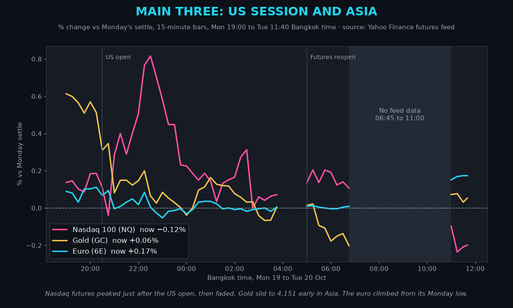
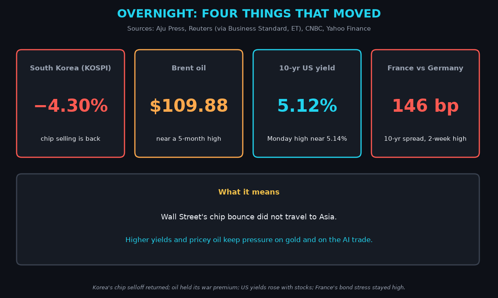
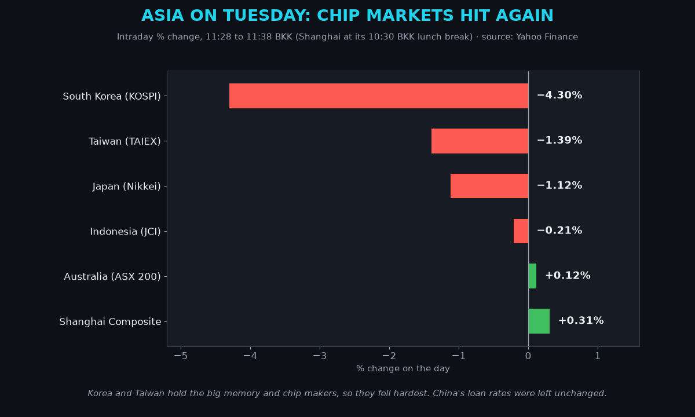
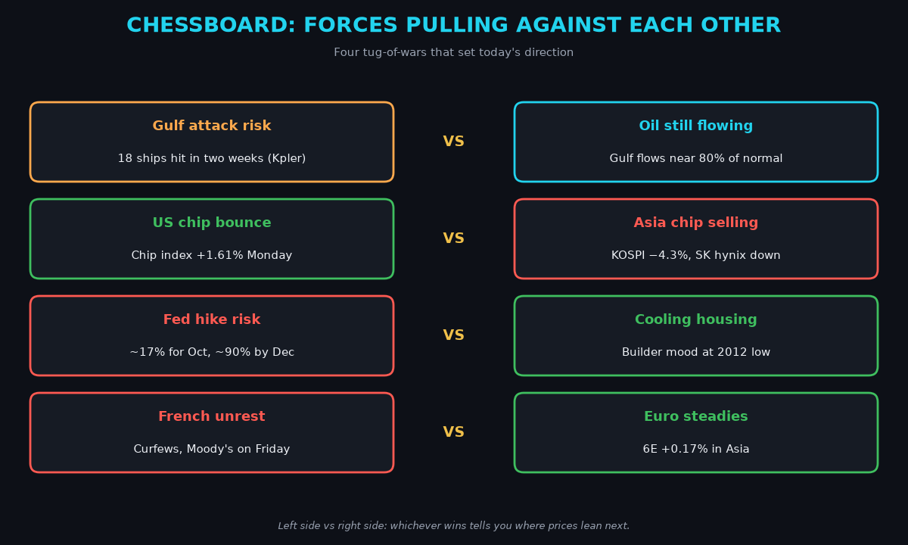
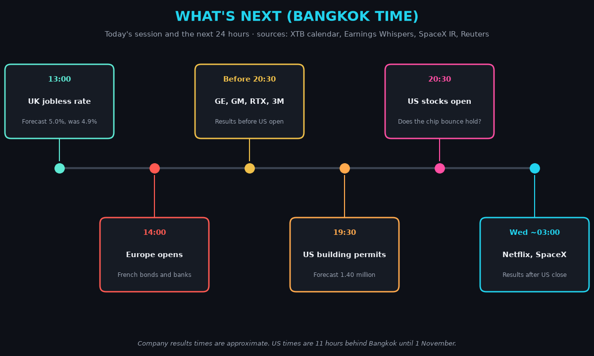
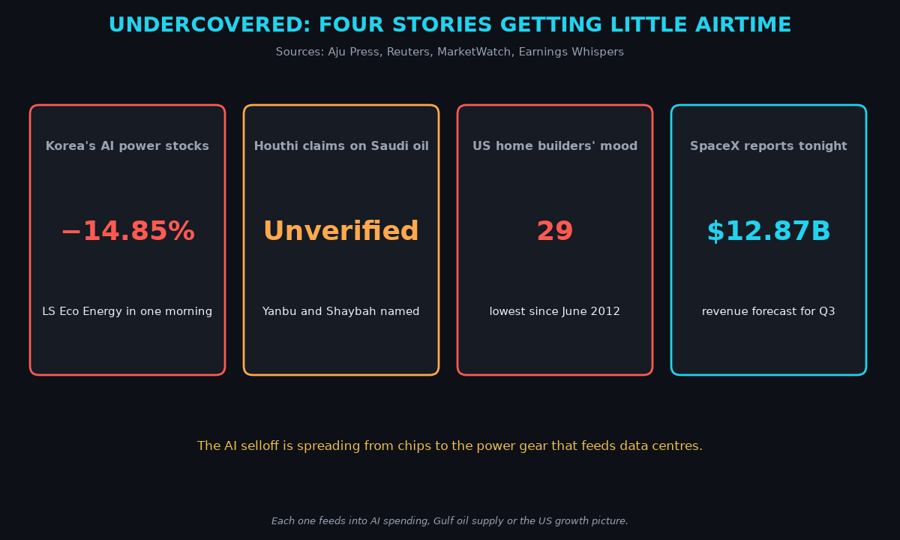
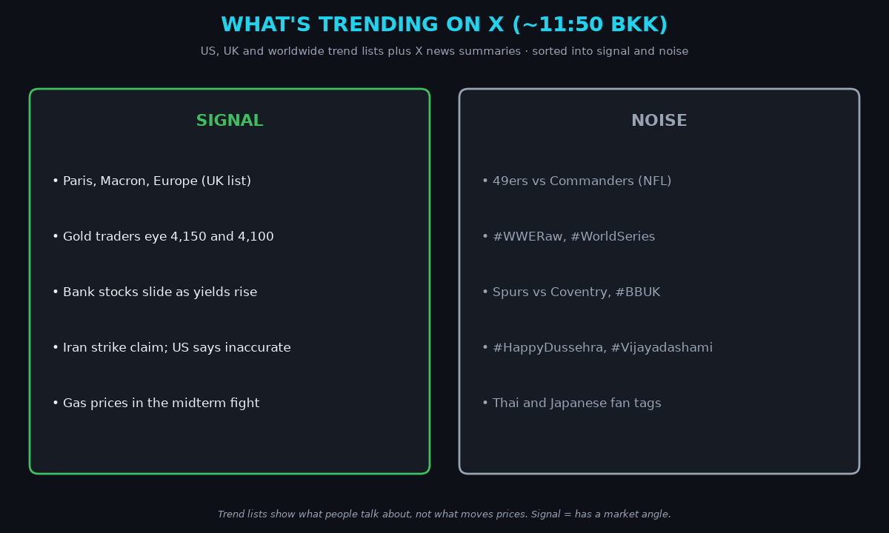

April · Market Intel, pre-London · Tue Oct 20, 2026 · ~12:10 BKK / ~06:10 London
Headline: Wall Street's chip bounce did not travel. Korea's KOSPI is down 4.3%, gold slipped for the first time in three sessions to near $4,160, and the euro is quietly clawing back.
US yields rose with stocks on Monday, which is bad news for gold. Oil is holding its war premium, with Brent near $110. So what: the AI selloff is not finished in Asia, and the US open at 20:30 BKK has to prove Monday's bounce was real.
1) Main instruments The three main contracts from Monday evening to now. Nasdaq futures peaked just after the US open and faded; gold slid early in Asia; the euro rose steadily. The shaded block is a gap in the data feed. |
(Futures are contracts that trade nearly around the clock, so they show the mood before markets open. Quotes are from the Yahoo Finance futures feed at 11:38 BKK (04:38 UTC), about 10 minutes delayed. The feed has no bars from 06:45 to 11:00 BKK, so ranges below use the bars it has.)
- Gold futures (GC, Dec): 4,162.5, +0.06%, at 11:38 BKK. Driver: higher US yields and a firmer dollar. Gold pays no interest, so it loses appeal when bonds pay more. December gold fell 0.50% on Monday to 4,160.1, after rising Thursday and Friday (Yahoo). Spot gold is heading for a third straight losing session (ET Now). Futures fell from 4,190.1 at 19:00 BKK Monday to 4,151.1 at 06:45 BKK. Spot gold was $4,134.91 at 06:47 BKK (Moneycontrol).
- Nasdaq 100 futures (NQ): 29,686.00, −0.12%, at 11:38 BKK. Driver: Asia's chip selloff is fighting Monday's US rebound. The Nasdaq Composite closed +1.11% at 26,430.89 (CNBC). Futures hit 29,983.5 at 22:30 BKK, then faded. The low this morning is 29,638.5 at 11:30 BKK.
- Euro futures (6E, Dec): 1.12570, +0.17%, at 11:37 BKK. Driver: the dollar is easing a little in Asia. French markets stay shut until 14:00 BKK, so the France risk has not been retested. Spot euro is 1.1236, +0.17% (Yahoo, 11:47 BKK). The futures low was 1.1229 at 23:00 BKK Monday. The high is 1.12585 at 11:30 BKK.
- Takeaway: gold is losing the yield fight, tech is stuck between a US bounce and Asian selling, and the euro is the calmest of the three.
Context. The dollar index (DXY, the dollar against six major currencies) is 101.80, −0.18% (Yahoo, 11:38 BKK). The 10-year US yield (what the US government pays to borrow for 10 years) is 5.12%, down 1.5 basis points (CNBC, 11:47 BKK; a basis point is 0.01 percentage point). It rose to about 5.14% on Monday as stocks rallied (FinancialMarkets.com, Treasury data). The VIX (the "fear gauge" built from S&P 500 option prices) closed Monday at 18.44, −7.75% (Cboe via Yahoo). US oil (CL, December contract) is 98.74, +0.20%. The November contract settled at $103.66, +2.22%, on Monday and expires today (CNBC). Brent (the global oil benchmark) is 109.88, +0.30%. S&P 500 futures (ES) are 7,741.75, +0.09% (11:38 BKK). Bitcoin is $81,978, +0.16% since 00:00 UTC (Yahoo, 11:48 BKK).
2) Top signals Four overnight moves. Korea's chip selloff returned, oil held near a five-month high, and French bond stress stayed elevated. |
- Korea's chip selloff is back. The KOSPI is −4.30%. It fell as much as 4.76% intraday. Foreigners sold about $456 million of shares by 10:30 Seoul time. (High: Aju Press, Yahoo)
- US yields rose with stocks. The 10-year went from about 5.05% in Asian hours Monday to about 5.14% in the US afternoon. (High: FinancialMarkets.com, Treasury data)
- France's bond stress held. On Monday the French 10-year yield rose about 13 bp to 4.9%. The gap over Germany is 146 bp. (High: Reuters via Euronext)
- Takeaway: the US bounce was not a global all-clear.
3) Why it matters Asia at about 11:30 BKK. The markets heaviest in memory and chip makers fell most; China and Australia held up. |
Monday flipped the bond market's role. Last week bonds rose when stocks fell. On Monday, yields and stocks rose together.
- When that happens, the worry is inflation and government borrowing, not a slowdown. (FinancialMarkets.com)
- That hurts gold. Higher yields raise the cost of holding a metal that pays nothing.
- It also squeezes AI companies, which borrow heavily to build data centers. Korea's SK hynix and Samsung make the memory chips those centers need. (Economic Times)
- Korea's power-equipment makers fell hard too. LS Eco Energy dropped 14.85% and HD Hyundai Electric 6.95% by mid-morning. (Aju Press)
- Mentor: a stock market heavy in one industry acts like a leveraged bet on it. Samsung and SK hynix were 44% of the KOSPI in May (Economic Times), so AI doubts hit Korea harder than New York.
- Takeaway: higher yields are now the enemy of both gold and AI stocks.
4) Chessboard Four tug-of-wars. The winners decide where oil, tech, rates and the euro lean next. |
- Gulf attacks vs oil still flowing. At least 18 ships were reportedly attacked in two weeks (Kpler via Reuters). But Gulf flows are back near 80% of pre-conflict levels, says US Energy Secretary Wright (via XTB). (Medium)
- US chip bounce vs Asian chip selling. The US chip index rose 1.61% Monday, ending an eight-day losing streak. Seoul sold anyway. (High: Aju Press)
- Fed hike risk vs a cooling economy. Markets price about a 17% chance of a Fed hike on Oct 28 and about 90% by December (CME FedWatch via Reuters and FinancialMarkets.com). Yet the US home builders' index fell to 29, its lowest since June 2012 (Reuters).
- French unrest vs a steady euro. Some cities were asked to impose curfews, and Moody's reviews France on Friday. But the euro is up in Asia. (High: Reuters, The Guardian)
5) Leading indicators (BKK times) Today's session and the next 24 hours in Bangkok time. Europe's open sets the tone for the euro; the US open and Netflix decide tech. |
- 13:00: UK jobless rate. Forecast 5.0%, from 4.9%. (XTB)
- 14:00: Europe opens. Watch French bonds and banks after Monday's selloff.
- Before 20:30: GE Aerospace, GM, RTX, 3M and Northrop report. (Earnings Whispers)
- 19:30: US building permits. Forecast 1.40 million. (XTB)
- 20:30: US stocks open. The test is whether chip buying returns.
- Today: November WTI expires. Quotes move fully to December.
- Wed ~03:00: Netflix, SpaceX, Capital One and United Airlines report. (Earnings Whispers, SpaceX investor site)
- Levels to watch: GC 4,151 (this morning's low) and 4,200 above. NQ 29,638.5 (today's low) and 29,983.5 (Monday's high). 6E 1.1229 and 1.1300. 10-year 5.15%. Brent $110.70 (Monday's high, the highest since May 20, per Reuters).
- Takeaway: the 20:30 BKK US open is the real test; Asia already voted no.
6) Undercovered Four stories getting little airtime. Each feeds into AI spending, Gulf supply or US growth. |
- The AI selloff is spreading to power gear. Korean power-equipment and cable makers fell 6% to 15% on worries about delayed data-center projects. (High: Aju Press)
- The Houthis claim strikes on Saudi oil sites, including an Aramco site in Yanbu and the Shaybah oilfield. Saudi Arabia has not confirmed this, and Reuters could not verify it. (Reuters via Business Standard)
- US home builders are at their gloomiest since 2012. The index fell 3 points to 29. High borrowing costs are weighing on housing. (High: Reuters via ET)
- SpaceX reports Q3 after the US close. Analysts expect $12.87 billion of revenue and $1.87 billion of profit. (Medium: MarketWatch preview; date from SpaceX investor site)
7) What's trending on X (~11:50 BKK) Live X trends sorted into signal and noise. France is the only market story on the trend lists; the rest of the signal is in X news summaries. |
- US: 49ers, Jayden Daniels, Commanders, #WWERaw, #WorldSeries.
- UK: Paris, Macron, Europe, #COYS, #BBUK.
- Worldwide: #HappyDussehra, #Vijayadashami, Felca, Thai and Japanese fan tags.
- Signal: French riots, now with a curfew-defying march in Lyon (medium: X news summary). Gold traders lean bearish, with targets at 4,150 and 4,100 spot (mood, not evidence). Bank stocks are sliding as yields rise. US House Speaker Johnson is making gas prices a midterm issue before the Nov 3 vote.
- Caution: Iranian sources claim a US strike on the Konarak naval base. Washington called the reports inaccurate, and nothing is verified. (X news summary)
- Noise: NFL Monday night, WWE, the World Series, Premier League and holiday greetings.
Bottom line
Monday's bounce was American, not global. Higher yields are pressing gold, and Asia is still selling AI. For Jim: gold needs to hold 4,151; a break opens 4,100, and the 10-year above 5.15% would add pressure. Nasdaq needs the US open to defend 29,638.5. The euro is the steadiest of the three; 1.1229 is the floor and 1.1300 the test. Interpretive note: Netflix and SpaceX land on the same night, both stories about whether big spending pays off. Treat them as a mood check before Meta and Tesla report on Wednesday, US time.
Confidence: Futures levels: high for direction, medium for the exact tick (Yahoo feed, with a data gap from 06:45 to 11:00 BKK). US closes, yields and Fed odds: high (CNBC, Reuters, Treasury data). Korea moves: high (Aju Press, Yahoo). Gulf flow and ship-attack counts: medium. Houthi claims and the Konarak strike claim: unverified. X news summaries: medium. |